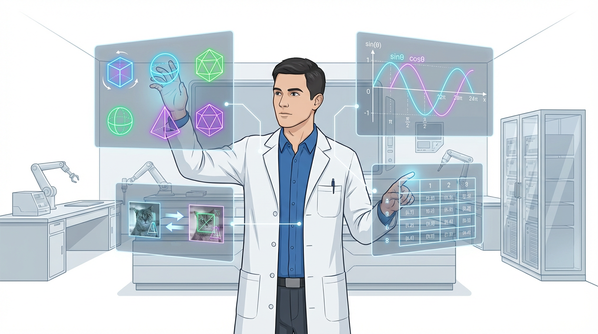

<!DOCTYPE html>
<html lang="en">
<head>
    <meta charset="UTF-8">
    <meta name="viewport" content="width=device-width, initial-scale=1.0">
    <title>Math 101 — Trigonometric Derivatives in AI</title>
    <script src="https://unpkg.com/react@18/umd/react.development.js"></script>
    <script src="https://unpkg.com/react-dom@18/umd/react-dom.development.js"></script>
    <script src="https://unpkg.com/@babel/standalone/babel.min.js"></script>
    <script src="https://cdn.tailwindcss.com"></script>
    <link href="https://fonts.googleapis.com/css2?family=Inter:wght@400;600;700;900&display=swap" rel="stylesheet">
    <style>
        body { font-family: 'Inter', sans-serif; background-color: #f8fafc; }
        .ksu-blue { color: #0073b7; }
        .ksu-bg { background-color: #0073b7; }
        .ksu-border { border-color: #0073b7; }
        .math-font { font-family: 'Courier New', monospace; }
        .arabic { direction: rtl; text-align: right; }
        
        .btn-primary {
            background: linear-gradient(135deg, #0073b7 0%, #005a8e 100%);
            transition: all 0.3s cubic-bezier(0.4, 0, 0.2, 1);
            box-shadow: 0 4px 15px rgba(0, 115, 183, 0.3);
            color: white;
        }
        .btn-primary:hover {
            transform: translateY(-2px);
            box-shadow: 0 8px 20px rgba(0, 115, 183, 0.4);
            filter: brightness(110%);
        }
        .btn-primary:active { transform: scale(0.96); }

        .btn-reset {
            background: linear-gradient(135deg, #ef4444 0%, #b91c1c 100%);
            transition: all 0.3s ease;
            color: white;
            box-shadow: 0 4px 12px rgba(239, 68, 68, 0.2);
        }
        .btn-reset:hover { filter: brightness(110%); transform: translateY(-1px); }

        .canvas-black-container {
            background-color: #0f172a;
            border: 2px solid #1e293b;
            padding: 10px;
            border-radius: 12px;
            box-shadow: 0 10px 25px rgba(0,0,0,0.2);
        }

        .activity-box {
            background: linear-gradient(135deg, #eef2ff, #e0f2fe);
            border: 1px solid #c7d2fe;
            border-left: 6px solid #1e40af;
        }

        .step-circle {
            background: linear-gradient(135deg, #1e40af, #2563eb);
            color: white;
            box-shadow: 0 4px 10px rgba(37, 99, 235, 0.3);
        }

        .note-orange {
            color: #ea580c;
            font-size: 0.75rem;
            font-weight: 600;
            margin-top: 8px;
            display: flex;
            align-items: center; gap: 4px;
        }

        canvas { border-radius: 8px; width: 100%; height: auto; }
        video { display: none; }
    </style>
</head>
<body>
    <div id="root"></div>

    <script type="text/babel">
        const { useState, useRef, useEffect } = React;

        const App = () => {
            const [angle, setAngle] = useState(0);
            const [imageLoaded, setImageLoaded] = useState(false);
            const [output, setOutput] = useState("");
            const originalCanvasRef = useRef(null);
            const rotatedCanvasRef = useRef(null);
            const fileInputRef = useRef(null);
            const videoRef = useRef(null);
            const imageRef = useRef(new Image());

            const handleFileUpload = (e) => {
                const file = e.target.files[0];
                if (!file) return;
                const reader = new FileReader();
                reader.onload = (event) => {
                    imageRef.current.src = event.target.result;
                };
                reader.readAsDataURL(file);
            };

            const useCamera = async () => {
                try {
                    const stream = await navigator.mediaDevices.getUserMedia({ video: true });
                    videoRef.current.srcObject = stream;
                    videoRef.current.play();
                    setTimeout(() => {
                        const canvas = originalCanvasRef.current;
                        const ctx = canvas.getContext('2d');
                        ctx.drawImage(videoRef.current, 0, 0, 420, 280);
                        stream.getTracks().forEach(track => track.stop());
                        setImageLoaded(true);
                        setOutput("> Image captured from camera.");
                    }, 2000);
                } catch (err) { alert("Camera access denied."); }
            };

            useEffect(() => {
                imageRef.current.onload = () => {
                    const ctx = originalCanvasRef.current.getContext('2d');
                    ctx.clearRect(0, 0, 420, 280);
                    ctx.drawImage(imageRef.current, 0, 0, 420, 280);
                    setImageLoaded(true);
                    setOutput("> Image loaded from file.");
                };
            }, []);

            const applyRotation = () => {
                if (!imageLoaded) return alert("Please upload or capture an image first!");
                const canvas = rotatedCanvasRef.current;
                const ctx = canvas.getContext('2d');
                const angleRad = (angle * Math.PI) / 180;
                
                const cosθ = Math.cos(angleRad);
                const sinθ = Math.sin(angleRad);

                ctx.clearRect(0, 0, 420, 280);
                ctx.save();
                ctx.translate(210, 140);
                ctx.rotate(angleRad);
                ctx.drawImage(originalCanvasRef.current, -210, -140, 420, 280);
                ctx.restore();

                const log = `Rotation Analysis:
---------------------------
Current θ = ${angle}°
Forward: x' = x cosθ - y sinθ
Inverse: d/dθ (sinθ) = cosθ

Trig Values:
cos(${angle}°) = ${cosθ.toFixed(4)}
sin(${angle}°) = ${sinθ.toFixed(4)}

AI Insight: Trig derivatives allow models 
to optimize the angle of orientation.`;
                setOutput(log);
            };

            const resetSystem = () => {
                setImageLoaded(false);
                setAngle(0);
                setOutput("");
                const ctx1 = originalCanvasRef.current.getContext('2d');
                const ctx2 = rotatedCanvasRef.current.getContext('2d');
                ctx1.clearRect(0, 0, 420, 280);
                ctx2.clearRect(0, 0, 420, 280);
                if (fileInputRef.current) fileInputRef.current.value = "";
                alert("Lab Reset Complete.");
            };

            return (
                <div className="min-h-screen flex flex-col">
                    <header className="bg-white border-b-4 ksu-border px-6 py-4 flex flex-col md:flex-row justify-between items-center shadow-md sticky top-0 z-50">
                        
                        <div className="text-center md:text-right">
                            <h1 className="text-xl md:text-2xl font-black ksu-blue uppercase tracking-tight leading-tight">Section 3.3</h1>
                            <p className="text-slate-500 font-bold text-xs uppercase tracking-widest leading-tight">Derivatives of Trigonometric Functions</p>
                        </div>
                    </header>

                    <main className="flex-grow p-4 md:p-8 max-w-7xl mx-auto w-full grid grid-cols-1 lg:grid-cols-2 gap-8">
                        <div className="space-y-8">
                            <section className="bg-white p-2 rounded-2xl shadow-lg border border-slate-200 overflow-hidden text-center">
                                
                                <div className="p-4 grid grid-cols-1 md:grid-cols-2 gap-6 text-sm text-slate-700 font-semibold italic">
                                    <p>AI models adjust the rotation angle θ using derivatives to align images correctly.</p>
                                    <p className="arabic">تقوم خوارزميات الذكاء الاصطناعي بتعديل زاوية الدوران باستخدام المشتقات.</p>
                                </div>
                            </section>

                            <section className="activity-box p-6 rounded-2xl shadow-xl">
                                <h3 className="text-xl font-black text-blue-900 mb-6 uppercase tracking-wider">Student Activity</h3>
                                <div className="space-y-6">
                                    <div className="flex items-start gap-4">
                                        <div className="step-circle w-10 h-10 rounded-full flex-shrink-0 flex items-center justify-center font-black">1</div>
                                        <div className="text-sm"><p className="font-bold text-slate-800">Source Input</p><p className="arabic text-slate-600">قم برفع صورة أو التقاطها بالكاميرا.</p></div>
                                    </div>
                                    <div className="flex items-start gap-4">
                                        <div className="step-circle w-10 h-10 rounded-full flex-shrink-0 flex items-center justify-center font-black">2</div>
                                        <div className="text-sm"><p className="font-bold text-slate-800">Set Angle θ</p><p className="arabic text-slate-600">اختر زاوية الدوران θ باستخدام شريط التمرير.</p></div>
                                    </div>
                                    <div className="flex items-start gap-4">
                                        <div className="step-circle w-10 h-10 rounded-full flex-shrink-0 flex items-center justify-center font-black">3</div>
                                        <div className="text-sm"><p className="font-bold text-slate-800">Rotate & Analyze</p><p className="arabic text-slate-600">لاحظ كيف يتم التدوير باستخدام sin و cos.</p></div>
                                    </div>
                                </div>
                            </section>
                        </div>

                        <div className="space-y-8">
                            <section className="bg-white p-6 rounded-2xl shadow-xl border-t-8 ksu-border">
                                <video ref={videoRef} />
                                <div className="space-y-6">
                                    <div className="grid grid-cols-2 gap-4">
                                        <button onClick={() => fileInputRef.current.click()} className="btn-primary font-black py-4 rounded-xl text-xs uppercase tracking-widest">📁 Upload</button>
                                        <button onClick={useCamera} className="btn-primary font-black py-4 rounded-xl text-xs uppercase tracking-widest">📸 Camera</button>
                                        <input ref={fileInputRef} type="file" onChange={handleFileUpload} hidden />
                                    </div>

                                    <div className="p-4 bg-slate-50 rounded-xl border border-slate-200">
                                        <div className="flex justify-between items-center mb-2">
                                            <label className="text-[10px] font-black text-slate-400 uppercase tracking-widest">Rotation Angle θ</label>
                                            <span className="ksu-bg text-white px-2 py-1 rounded text-xs font-bold">{angle}°</span>
                                        </div>
                                        <input 
                                            type="range" min="-180" max="180" step="1"
                                            className="w-full h-2 bg-slate-200 rounded-lg appearance-none cursor-pointer accent-blue-600"
                                            value={angle} 
                                            onChange={(e)=>setAngle(e.target.value)} 
                                        />
                                    </div>

                                    <button onClick={applyRotation} className="w-full btn-primary font-black py-4 rounded-xl uppercase tracking-widest text-sm shadow-lg">
                                        🔄 Apply Trigonometric Rotation
                                    </button>

                                    <div className="space-y-6">
                                        <div className="grid grid-cols-1 md:grid-cols-2 gap-4">
                                            <div>
                                                <h3 className="text-[10px] font-black uppercase text-slate-400 mb-2 tracking-widest">Original Image</h3>
                                                <div className="canvas-black-container"><canvas ref={originalCanvasRef} width="420" height="280" /></div>
                                            </div>
                                            <div>
                                                <h3 className="text-[10px] font-black uppercase text-blue-500 mb-2 tracking-widest">Rotated Result</h3>
                                                <div className="canvas-black-container"><canvas ref={rotatedCanvasRef} width="420" height="280" /></div>
                                            </div>
                                        </div>
                                    </div>

                                    <div className="mt-4">
                                        <h3 className="text-[10px] font-black uppercase text-blue-500 mb-2 tracking-widest">Trig Derivation Log</h3>
                                        <div className="result-black p-4 rounded-lg math-font text-xs min-h-[140px] whitespace-pre-wrap shadow-inner overflow-x-auto">
                                            {output || "> Initialized. Source an image to begin rotation analysis..."}
                                        </div>
                                    </div>

                                    <div className="pt-4 border-t border-slate-100 space-y-3">
                                        <button onClick={resetSystem} className="w-full btn-reset font-black py-4 rounded-xl text-xs uppercase tracking-widest shadow-lg">🔄 Reset System</button>
                                        <div className="note-orange text-center mt-2 justify-center">● Derivatives d/dθ help algorithms find the optimal angle of rotation.</div>
                                    </div>
                                </div>
                            </section>
                        </div>
                    </main>

                    <footer className="bg-white border-t-4 ksu-border mt-12 py-12 text-center shadow-lg">
                        <p className="font-black ksu-blue text-2xl tracking-tight mb-2 uppercase">Differentiable Calculus with AI Applications</p>
                        <p className="text-slate-400 font-bold text-[11px] uppercase tracking-[0.4em]">Deanship of Common First Year – Basic Sciences Department</p>
                    </footer>
                </div>
            );
        };

        const root = ReactDOM.createRoot(document.getElementById('root'));
        root.render(<App />);
    </script>
</body>
</html>